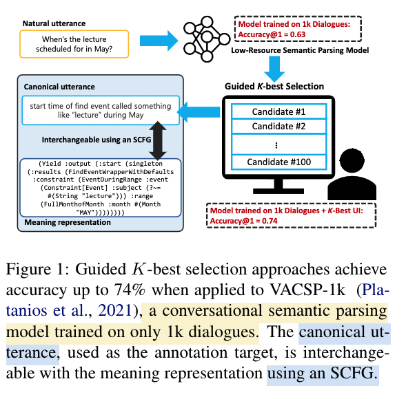
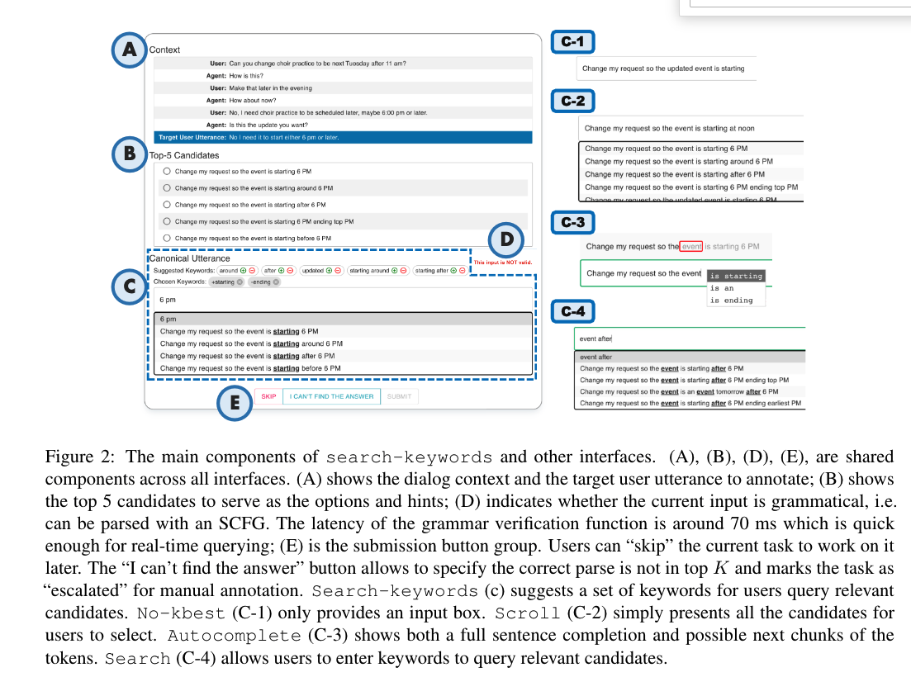
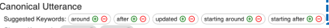
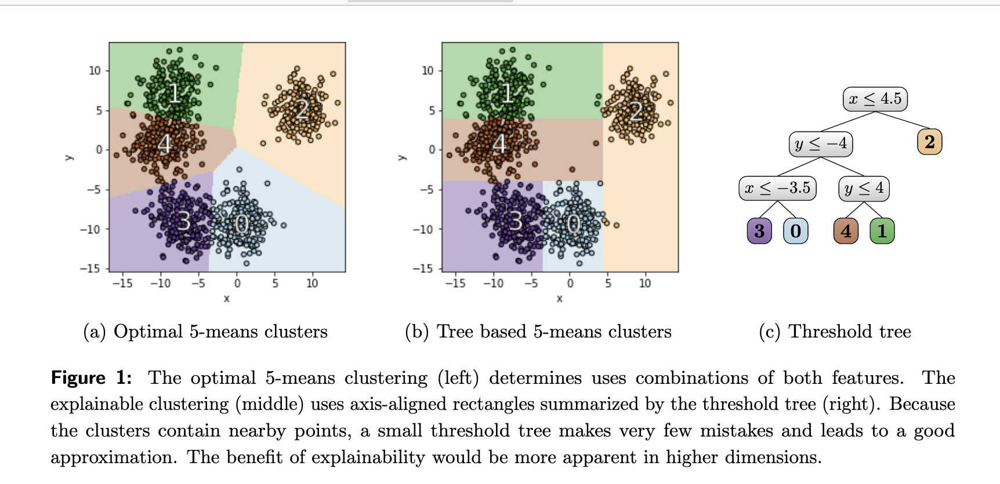

[TOC]
- Title: Guided K-best Selection for Semantic Parsing Annotation
- Author: Anton Belyy et. al.
- Publish Year: 2021
- Review Date: Feb 2022
Summary of paper
Motivation
They wanted to tackle the challenge of efficient data collection (data annotation) for the conversational semantic parsing task.
In the presence of little available training data, they proposed human-in-the-loop interfaces for guided K-best selection, using a prototype model trained on limited data.
Result
Their user studies showed that the keyword searching function combined with a keyword suggestion method strikes the balance between annotation accuracy and speed
What is K-best selection annotation
The annotator wanted to annotate the natural utterance into canonical utterance (so that the canonical utterance can be translated into logical forms using synchronise Context-Free Grammar (SCFG) method)
A pretrained small model will provide the K-best candidates

What are the limitations
- annotation speed
- as K grows larger, an annotator needs to spend more time reading the candidate list.
- Annotation accuracy
- early plausible candidates in the rank-list may bias interpretation; an annotator may commit early to less than perfect result without exploring further. (i.e., lack of diversity later)
What is the proposed solution
Guided K-best selection interface

Search-Keyword (C) interface
this interface will show a list of top 5 discriminative key-words

these keywords are used to narrow down the current candidates
after that, users can choose if the keyword should be included or excluded in the correct parse, if it is not included, the pretrained prototyping model will recalculate the candidates sentences.
How do we obtain the discriminative keywords
- they developed a keyword suggestion method inspired by post-decoding clustering (PDC) from (Ippolito et al., 2019) in a way that
- we first of all use the prototyping model to generate K candidates (K is large)
- we cluster the K candidates into k clusters, with diverse meanings, and select the k best candidates, one from each cluster. This distills the original K candidates into fewer but more diverse candidates, where k « K
- furthermore, they employ a cluster explanation technique proposed by Dasgupta et al. (2020)

- further distill the k diverse candidates into k’ keywords
- keywords are the nodes in the threshold tree
- since the features in the nodes may be repeated and reused across different branches of the binary tree, k’ < k « K
Some key terms
prototyping model
the prototyping model is trained to output canonical utterances from natural utterances. but the training data is limited
the prototyping model needs to output a enumeration of candidates ranked by model score.
conversational semantic parsing and canonical utterances
the use of canonical utterance formulates semantic parsing as a paraphrasing task that paraphrases a natural utterance to a controlled language.
A synchronous context-free grammar (SCFG) defines a mapping between task-specific meaning representations and their corresponding controlled languages.
That is to say, using such an SCFG, a complicated meaning representation can be presented as a human-readable canonical utterance (more similar to natural language) so models can focus on learning how to paraphrase a natural utterance to a canonical utterance.
And the human annotators no longer need to learn the syntax of the meaning representation.
Potential future work
The use of canonical utterance and such guided K-best selection annotation interface is really userful for our project.
For canonical utterance and SCFG, please check this paper https://arxiv.org/pdf/2104.08768.pdf
For training dialogue dataset, we can check SMCalFlow dataset